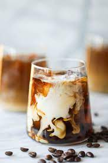

Iced Coffee

Chill Zone
For those days when you need a little boost!
This recipe can be caterated to any taste... AS LONG AS YOU LOVE COFFEE!!
Ingredients
- Cold Brew ( I perfer extra strong)
- Heavy Cream
- Half and Half
- Carmel Drizzle
- Carmel syrup
- Crushed Ice
- Drinking glass
Steps
- Coat inside of Glass with carmel drizzle
- Fill cup with ice 2/3 to top
- Fill cup 1/4 with half and half
- Fill cup 2/4 with cold brew
- 5 pumps of carmel syrup
- Froth heavy cream and pour in top
- 5 pumps of carmel syrup
- Drizzle carmel ontop of cream
- When you're ready to enjoy stir and DRINK!!!